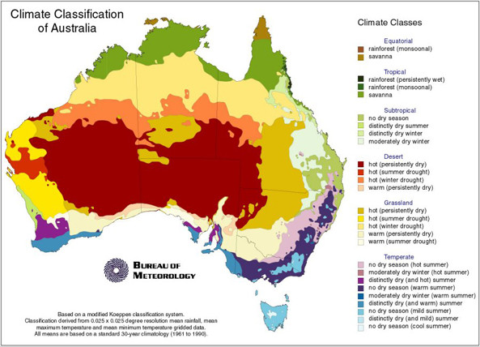
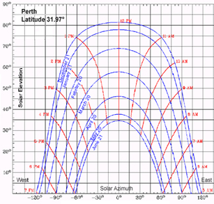
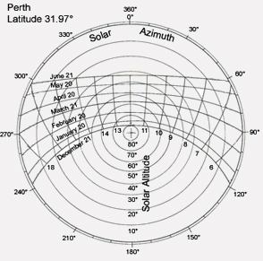
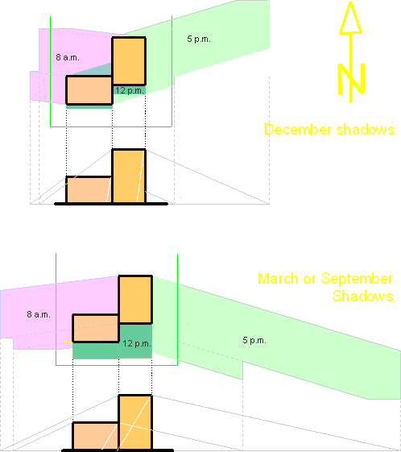

Climate Zones -Macro and Micro Climate
The purpose of climatic design is to facilitate an increase in the energy efficiency of buildings. Thermal design improves the living and working environment for occupants through ecologically sustainable means. It also seeks to reduce the effect on public health by adverse climatic conditions.
Climatic design issues are now incorporated in Residential planning codes and Building Code of Australia.
Climate Zones
Australia is a large country with three very different different climates
-tropical, arid and temperate.
Regional climate zones are particularly significant for the design and
construction of buildings.
The map from the Bureau of Meteorology below shows these climate zones
with sub groups.

According to the BCA (Volume 2) Figure 1.1.4 Australia is divided into eight (8) climate zones for the puposes of thermal design of a building. Table 1.1.2 list climate zones for cities of other various locations.

Figure 1.1.4
Because buildings are not fully sealed, outside conditions have a significant influence on the climate inside the building. The building's style, the materials used, the state of repair of the building and whether the building is insulated, air-conditioned or without either, all influence the impact outside conditions have on the climate inside the building.
Macro and Micro Climate
Climate change is the greatest environmental threat the world faces today. It is caused by emissions of greenhouse gases such as carbon dioxide. Carbon dioxide (CO2) is a by-product of our use of energy, and therefore by cutting energy consumption we automatically reduce total CO2 emissions.
- Macro climate: large-scale climate, of a large area or country. Climate of this type is not easily modified by human efforts. However, continued pollution of the Earth, its streams, rivers, and atmosphere make human actions necessary. The climate of an area is the combination of conditions that will most likely occur there. The conditions that usually influence the climate include: temperature, rainfall, latitude, and topography etc.
- Micro climate: small-scale contrasts, such as between hilltop and valley or between buildings and a surrounding area. They may be of an extremely small scale, such as one side of a hedge contrasted with the other. Climate in the microscale may be effectively modified by relatively simple human efforts.
More info on Macro-Micro Climate from the University of Strathclyde's Energy Systems Research Unit ESRU's web site.
There are many sources of energy available locally within a building site. These include direct and diffuse radiation from the Sun, air movement from winds and temperature differences.
Buildings designed for climate
Climatic design is practiced throughout the world and has been shown to
produce buildings with low energy costs, reduced maintenance, and superior
comfort.
Some of the designfeatures are outlined below:
- Utilising climatic factors may not require mechanical heating or cooling.
- Homes that are passively designed take advantage of natural energy flows to maintain thermal comfort. (Well designed envelopes maximise cooling air movement and exclude sun in summer, trap and store heat from the sun in winter and minimise heat loss to the external environment.)
- Building envelope is a term used to describe the roof, walls, windows, floors and internal walls of a home..
- Maximise the thermal comfort and minimise the need for energy reliant
heating and cooling appliances to achieve accepted levels of thermal
comfort.
There are many Internet site which identify key actions that can be undertaken to save energy. Actions may be divided up into different areas (such as heating, lighting etc.). In Table 1 below you find some links to Internet sites that will be of interest to you.
Table 1| Passive Solar Guidelines | Passive solar energy means that mechanical means are not employed to utilize solar energy. |
| Passive design | Passive design is design that does not require mechanical heating or cooling. Homes that are passively designed take advantage of natural energy flows to maintain thermal comfort. |
| Passive design techniques | In a physical sense, a passive system is one that uses only locally available energy sources and utilises the natural flow paths of that energy to produce work. |
| Climatic design of buildings | "Weather" is the set of atmospheric conditions prevailing at a given place and time. "Climate" can be defined as the integration in time of weather conditions, characteristics of a certain geographical location. |
| What technologies exist? | Click on the diagram or the list to go to
the relevant technology. Photovoltaic Cells, Batteries, Inverters, Two-Way Meters, Thermoelectrics Solar Water Heaters, Passive Design |
Shade Angles
The "Residential Design Codes of Western Australia" requires buildings
to be design for climate. Protecting solar access for neighbouring properties
is an important design criteria. Excessive shadows should not be cast
onto adjacent properties. The calculation of overshadowing
for particular month and times of the day can be determined from sun charts.
(The sunchart is a map of the sun's path across the sky during the year
and maps out the sun's position as a function of day and time.) There
are two types of sun charts:
|
a) Cylindrical sunchart 
Figure 1 |
b) polar sunchart 
Figure 2 |
Figure 1 & 2 show two typical suncharts for Perth 31.97° south
latitude. These suncharts map out the sun's position in the sky (vertical
and horizontal shadow angles). For the location of the sun's position
you need two coordinates, the altitude (vertical) and the azimuth
(horizontal) angle. The altitude angle (angle of elevation) measures the
sun's location in the sky above the horizon.
Figure 1 (cylindrical sunchart) shows the azimuth angle in degrees east
or west of due North (southern hemisphere). Angles being positive due
east and negative for western angles.
Figure 2 (polar sunchart) shows the azimuth as compass bearing, relative
to direction north. Azimuth angles range from 0 degrees (north) through
90 (east), 180 (south), 270 (west), and up to 360 (north again).
The cylindrcal sunchart seems to be easier to use. The University of Oregon has a program that creates cylindrical suncharts for any location on the earth. Use these suncharts to determine the altitude and azimuth angle for your assignment.
Templates will be provided to record the appropriate data (see Table 1). They include longitude and latitude angles for various WA locations.
Shade Angles |
|||||||
|
Location
|
Month
|
8 a.m.
|
12 p.m.
|
5 p.m.
|
|||
| Altitude | Azimuth | Altitude | Azimuth | Altitude | Azimuth | ||
| Perth Latitude 31.9667°S Longitude 115.8167°E |
December |
37.0°
|
97°
|
81.5°
|
0° (360°)
|
24°
|
253.5°
|
| Jan/Nov |
35.5°
|
92°
|
78°
|
0° (360°)
|
22.5°
|
260°
|
|
| Feb/Oct |
31.0°
|
83°
|
69°
|
0° (360°)
|
18°
|
268°
|
|
| Mar/Sept |
25.0°
|
68°
|
58°
|
0° (360°)
|
12.5°
|
278°
|
|
| Apr/Aug |
18.0°
|
63°
|
46°
|
0° (360°)
|
6°
|
288°
|
|
| May/July |
12.5°
|
57°
|
37.5°
|
0° (360°)
|
1.5°
|
295.5°
|
|
| June |
10.0°
|
53°
|
34.5°
|
0° (360°)
|
0°
|
298°
|
|
Table 1 shows the azimuth and altitude angles for Perth at 8 a.m., 12
p.m. and 5 p.m. for a hole year. The data for the month December at 8
a.m., 12 p.m. and 5 p.m. are used in Figer 3 to draw a shadow diagram.
Figure 3
Figure 4 shows how the shadows changed during the year. High building will cast long shadows in the winter month. (Azimuth and altitude angles are taken Table 1.)

Figure 4